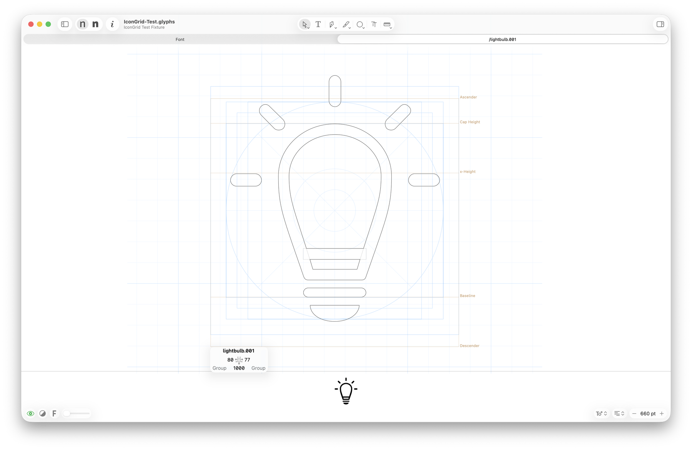
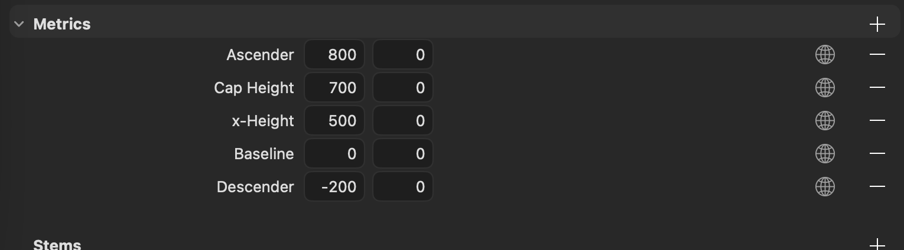
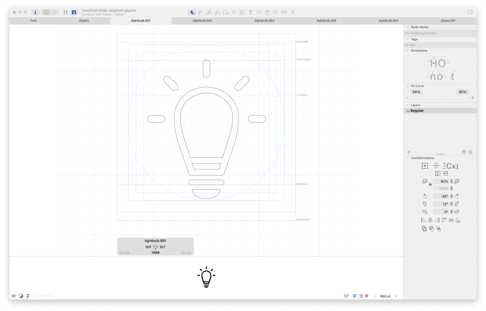
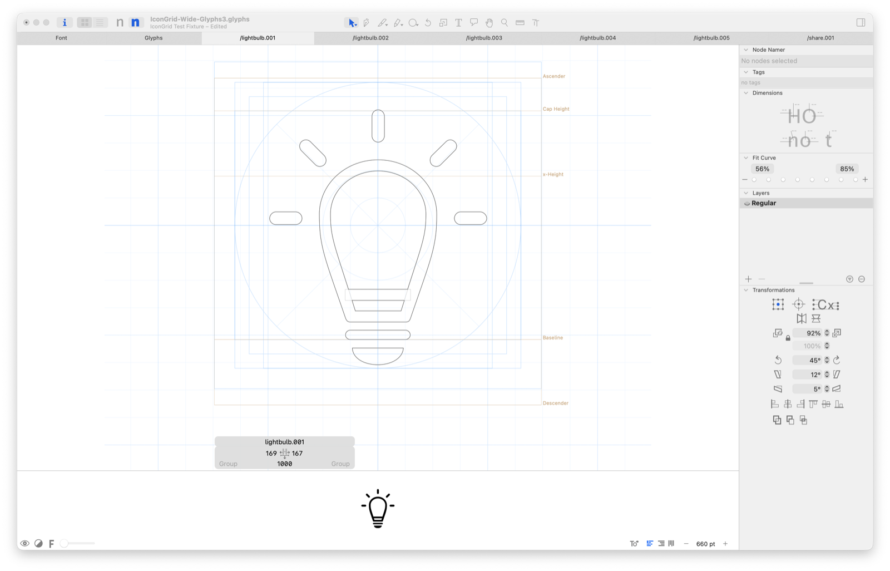
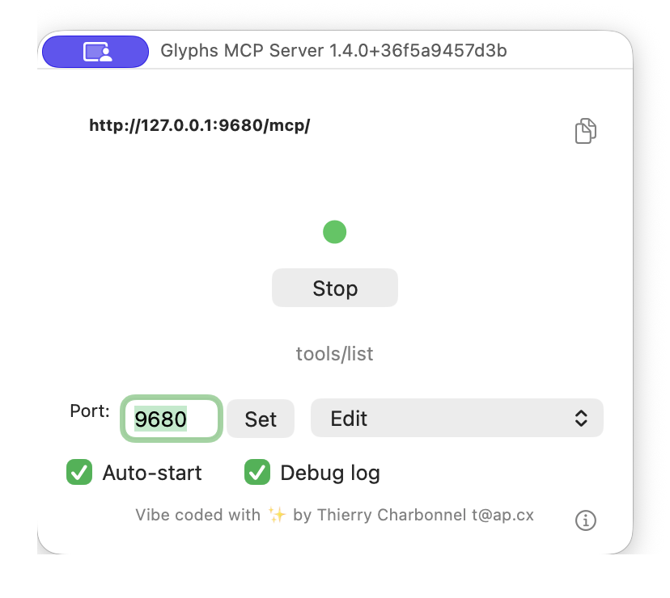

Normal setup
Use each master’s H stem. Set gridSize only for an intentional override.
Reporter plug-in · Glyphs 3.5 and 4
Draw with a wide field of square cells, two useful inner circles, spokes, and metric-fitted keylines. Set one construction unit per master and keep the rest simple.

Manual setup
Download the release, unzip it, and double-click IconGrid.glyphsReporter. Restart Glyphs, open a glyph in Edit view, then choose View → Show Icon Grid. To update, install the newer bundle and restart; to uninstall, remove Icon Grid from Glyphs’ plug-in folder and restart.

Weight-matched setup · 1000 UPM
Define weight-specific stems under Font Info → Masters → Stems. No IconGrid.gridSize parameter is needed: the same value controls square cells and the distance between up to two inner circles. The background grid extends at least four cells beyond the icon canvas.
These values come from the generic icon scaffold and are starting points. Use measured H stems for an existing design. For any master, x = (cap height − baseline) / H stem. The live diameter is (cap height − baseline) / 0.8: 875 units at the default cap height, making the landscape keyline span exactly from baseline to cap height.
Grid phase
In odd mode, one complete cell is centered on the horizontal and vertical construction axes. Use even only when grid borders must coincide with both axes.


Options
Each setting resolves independently. A valid active-master value wins, then a valid font value, then the built-in default. Disabled or invalid values fall through safely.
Use each master’s H stem. Set gridSize only for an intentional override.
The live area fits the cap height automatically. Store padding only for a custom cell-based inset; cadence, spokes, and keylines already have useful defaults.
Color and opacity, with a blue default that stays distinct from Glyphs guides.
Width, height, columns, rows, rings, origin, and baseline offset remain available for custom canvases.
Glyphs MCP
Start Glyphs MCP with the Edit profile, connect to http://127.0.0.1:9680/mcp/, and install this repository’s Icon Grid skill. The skill identifies the font, previews changes, applies only confirmed values, reads them back, and leaves the font unsaved.

Use it after Glyphs MCP and the Icon Grid skill are installed. This is a read-only check: the AI explains the grid values without changing or saving the font.
Use $glyphs-mcp-icon-grid with the font open in Glyphs.
Check the grid size for each master.
Explain where each value comes from.
Do not change or save the font.Expected explanation: when IconGrid.gridSize is not stored, the grid automatically uses each master’s H stem—84 for Regular and 135 for Bold in this example.
Double-click Install GlyphsIconGrid Skill.command in the unzipped release and choose the shared location. Then add the MCP server to ~/.codex/config.toml.
[mcp_servers.glyphs-mcp]
url = "http://127.0.0.1:9680/mcp/"Double-click Install GlyphsIconGrid Skill.command and choose Claude. Then connect the local server:
claude mcp add --scope user --transport http glyphs-mcp \
http://127.0.0.1:9680/mcp/Double-click Install GlyphsIconGrid Skill.command and choose the shared location. Add httpUrl under mcpServers in ~/.gemini/settings.json.
"glyphs-mcp": {
"httpUrl": "http://127.0.0.1:9680/mcp/"
}Double-click Install GlyphsIconGrid Skill.command and choose the shared location. Put the Streamable HTTP server in ~/.cursor/mcp.json.
"glyphs-mcp": {
"url": "http://127.0.0.1:9680/mcp/"
}The MCP endpoint is local to your Mac. A browser-only AI session normally cannot reach 127.0.0.1.